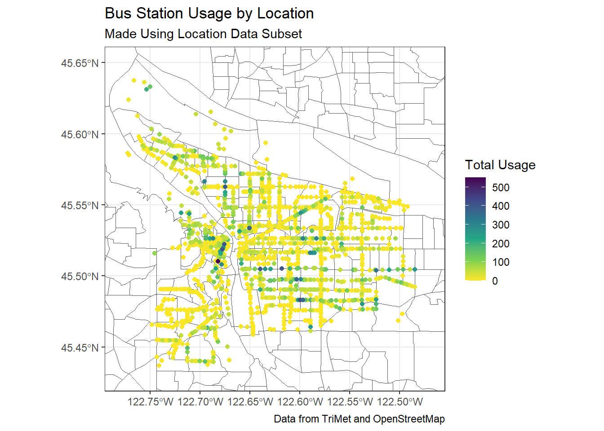
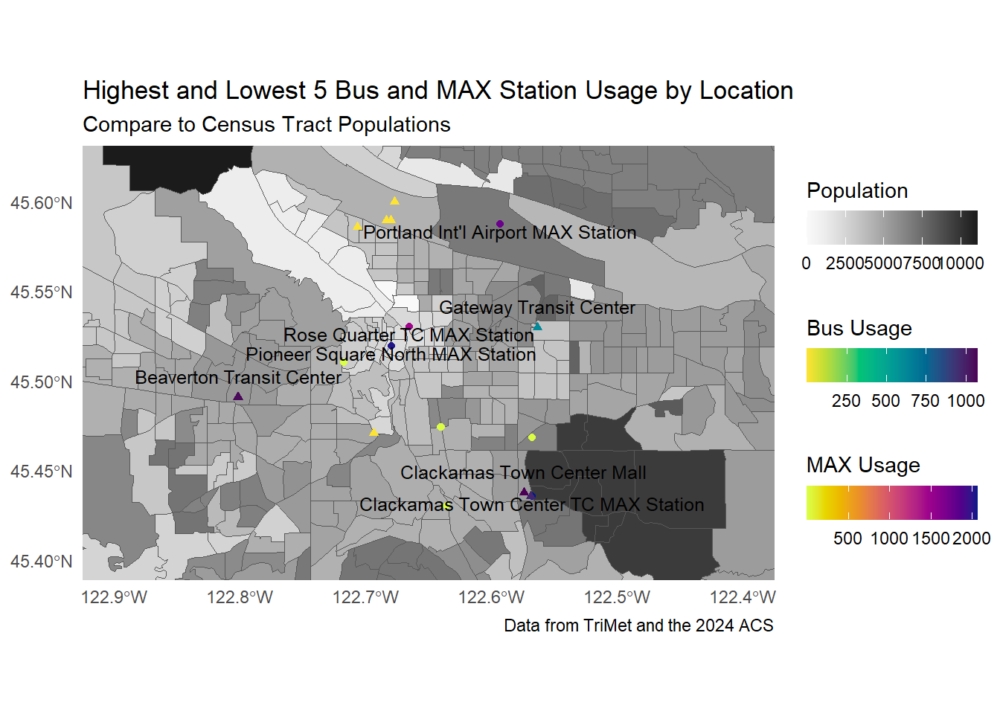

Conclusions
Over the course of this project, we went through the data collection and engineering process as well as modeling usage using statistical and machine learning-based regressions. Two types of data were collected from the TriMet website: usage information by station for Spring 2025, and schedule information for each station. These values were uploaded into a database, as well as transformed into a number of features for use in predicting the usage value of a station.
We experimented with multiple Poisson regression models, but ultimately weren’t able to generate accurate predictions. Plotting usage against predicted usage shows a scatterplot of points randomly spread on either side of the y=x diagonal line. Additionally, the summary of the model shows that each variable has negligible effects on usage. It’s possible that a different statistical model should be used, but more likely that the features we created are simply not good predictors of usage.
[TALK ABOUT THE MACHINE LEARNING MODELS]
Future Work
In some ways, the fact that schedule information alone is not particularly predictive of usage is not a surprising discovery. Future work done on this problem would benefit highly from the inclusion of accurate location data for each station stop, which was unfortunately not easily available within the timeframe of this project. Potential inclusions beyond merely location data could be information that provides context to the neighborhood the station is in: how many people live within a certain radius, is this station part of a transit center or not, is there parking available nearby? and other possible questions that would allow for a holistic understanding of the station, rather than merely focusing on the schedule as set up by TriMet.
We were able to conduct a small amount of preliminary analysis that indicates location data would be a meaningful predictor in future models.
Another capstone group kindly allowed us to use their data that provides coordinates of intersections in downtown Portland, which we were able to use to cross-reference our stations with names in “Street Name & Street Name” format, of which there were 4,706 that overlapped with the reference table we had access to. Unfortunately, the cross-referencing strategy used was not always reliable, and as such stations were not always assigned the correct coordinates. This particular location dataset had minimal, if any, effect on models trained using it. However, we were able to use this location dataset to produce Figure X, below, which shows that high-usage stations are often clustered together. This leads us to believe that a correctly-gathered location dataset would in fact make a good predictor in future models.
In the later stages of our analysis, we found that there is in fact a way to extract TriMet stop locations from the maps provided on the TriMet website. It was too involved to be able to webscrape within the time restrictions of this project, but we manually extracted the locations of the 5 MAX and bus stations with the highest and lowest usage, resulting in a dataset of 20 stations with location information. This dataset was combined with population information retrieved from the 2024 American Community Survey to produce Figure X. It can be seen that population has an effect on transit usage as well: the cluster of stations in the bottom left of Figure X at the Clackamas Town Center are very near a high-population area. It can also be seen that most of the lowest-usage bus stations are clustered together in a relatively low-population census tract. Additionally, two of the highest-usage MAX stations are close together in the Portland downtown. Figure X provides a compelling argument for the inclusion of location and neighborhood context data in any future investigation of this topic.

In Conclusion
All in all, this was a high-level analysis of TriMet usage data. We provide a database of usage data by station for Spring 2025, which also includes schedule information for each stop. This data was used to engineer a handful of features that were used to predict usage numbers, but the resulting predictions were not particularly high-scoring on any of the accuracy metrics investigated. Future work that provides information such as location context to stations is likely to improve our ability to predict TriMet station usage, and allow us to determine where a station could be added.